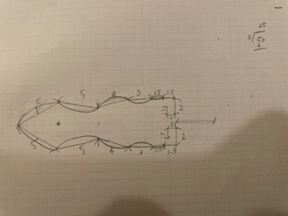
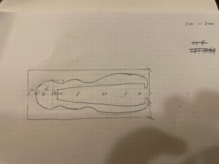

ピンセット課題
1.作品のタイトル
なみなみピンセット
まず完成品はこちら！！

設計図


作品説明
指の形にフィットし、持ちやすいものにした
横から見るとワニのようでかわいい
空いている穴にひもを通せば、ストラップになる
設計ファイル
なみなみピンセット stlファイル
なぜ作ろうと思ったか
誰のために作るか考えたときに使う人が使いやすいようなものを
作ろうと考え付いたから。
持ち運べて、コンパクトなものがいいと考えたから。
試作


タテ向きにプリントしたため、固まる前に溶けてしまい、きれいに作成できなかった
反省点
ピンセットの横の開きが少し甘かったため、ものを挟んで広げたら
ピンセットの一部が破損した
多少は広げることができるということが分かった
もう少し頑丈なピンセットを作ろうと思う
今回の学び
穴のサイズは毎回同じではないこと
プリントできる小ささは限られていること
プラスチックが固まるまでに少し時間がかかること
使用動画について
完成した作品が破損してしまったため
設定したサイズよりも穴の大きさが小さくなったため、ひもを通せなかった
この二つの理由により、使用動画をアップできなかった